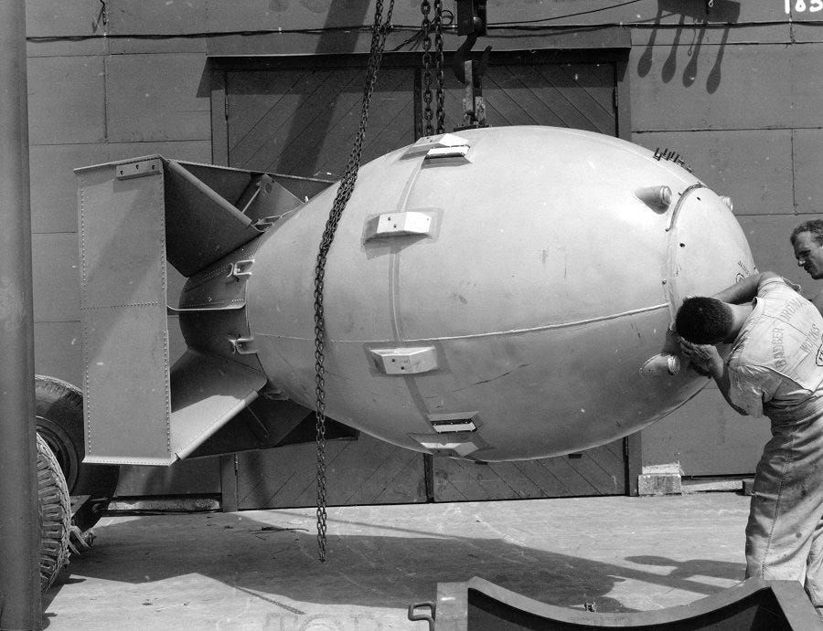
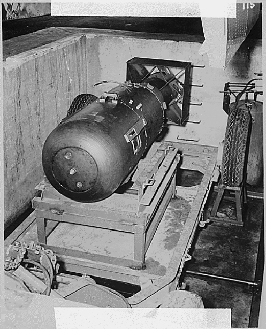
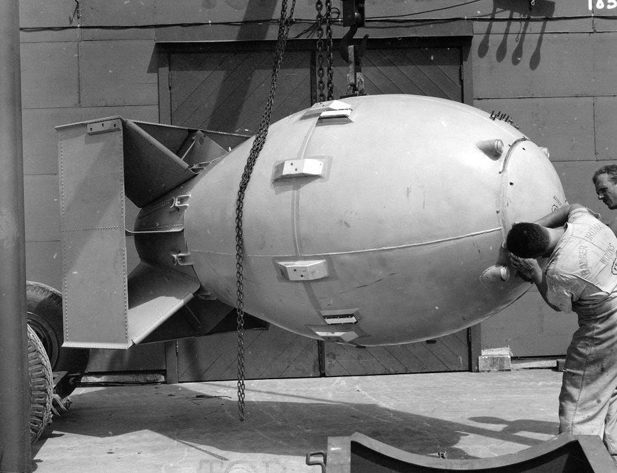
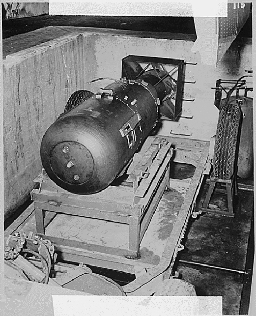

The United States bombed Nagasaki on August 9, 1945, and Hiroshima on August 6, 1945. This bombing was a great surprise for the Japanese AND the American citizens. America announced that this bombing was something they had to do because they
needed to stop the war and save thousands of innocent lives in America. Hiroshima was bombed first, at 9:15 AM that morning. Nagasaki was about was after about two days and two hours later at 11:02 AM. The plane that dropped the bomb, Enola Gay,
was a Superfortress bomber that dropped a 9000-pound bomb on those two cities. The bombing of Hiroshima was equal to 15,000 tons of TNT. The bomb on Nagasaki produced a twenty-two-kiloton blast. Twenty-two kilotons are about 48,501,698 pounds of
TNT. Did you know that 63% of Nagasaki and Hiroshima's buildings were destroyed? Eighty thousand people instantly died from the radiation of the bombing. One hundred thirty-five thousand people died from the Hiroshima blast. Then, another seventy
thousand people died from the Nagasaki bombing. About 205 thousand people died from both bombings. The bomb that was dropped in Hiroshima was made for uranium. However, the Nagasaki bomb was made from plutonium. Now let us see the tremendous
aftermath of the bombings of Hiroshima and Nagasaki!
 


